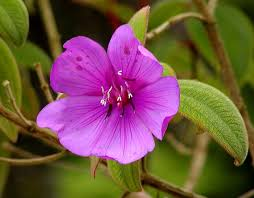

Melastomataceae
Melastome Family / Meadow Beauty Family
Melastomataceae is a large and diverse family of flowering plants in the order Myrtales (Rosids), encompassing herbs, shrubs, trees, and lianas. It is predominantly found in tropical regions worldwide, especially the Neotropics. The family is readily recognized by its characteristic opposite leaves with distinctive acrodromous venation (3 or more main veins running parallel from base to tip) and unique stamen morphology, often with appendages and poricidal anthers. The family now often includes the former Memecylaceae.
Overview
Melastomataceae is one of the largest angiosperm families, containing approximately 150-170 genera and 4500-5000 species. Its members exhibit a wide range of growth forms, from small annual herbs to large rainforest trees and climbing lianas. The vast majority of species are found in tropical and subtropical regions, with the Neotropics hosting the greatest diversity. They occupy diverse habitats, including rainforest understories and canopies, savannas, montane cloud forests, and wetlands.
The family is defined by several key characteristics, most notably the distinctive leaf venation pattern where 3 to 9 main veins arise from or near the base and curve towards the apex, connected by prominent perpendicular cross-veins. Another hallmark is the unique structure of the stamens, which are often bent or "geniculate," frequently possess elaborate appendages on the connective tissue, and typically release pollen through terminal pores rather than longitudinal slits. Many species have showy flowers, often in shades of pink, purple, blue, or white, making them popular ornamentals (e.g., Tibouchina, Medinilla). The circumscription of Melastomataceae is now generally accepted to include the formerly separate family Memecylaceae, which adds further diversity, particularly in tree forms with often inferior ovaries and berry fruits.
Quick Facts
- Scientific Name: Melastomataceae (incl. Memecylaceae)
- Common Name: Melastome Family, Meadow Beauty Family
- Number of Genera: Approximately 150-170
- Number of Species: Approximately 4500-5000
- Distribution: Pantropical, especially Neotropics.
- Habit: Herbs, shrubs, trees, lianas, epiphytes.
- Evolutionary Group: Eudicots - Rosids (Malvids) - Myrtales
Key Characteristics
Growth Form and Habit
Highly diverse: annual or perennial herbs, shrubs, trees (small to large), woody lianas, and epiphytes.
Leaves
Leaves are almost always opposite (rarely whorled or alternate), simple, and usually have entire margins (sometimes serrate). The most distinctive feature is the acrodromous venation: typically 3, 5, 7, or 9 main longitudinal veins arise from the base (or near the base from the midrib) and run parallel or curve towards the leaf apex. These main veins are connected by numerous, conspicuous, parallel, ladder-like (scalariform) tertiary veins running perpendicular to the main veins. Stipules are generally absent.
Inflorescence
Inflorescences are variable, commonly terminal or axillary cymes or panicles, but also heads, spikes, or solitary flowers. Bracts are often present and can be conspicuous.
Flowers
Flowers are usually actinomorphic (radially symmetrical), bisexual, and typically 4- or 5-merous. They are often showy and frequently possess a distinct floral tube or cup (hypanthium).
- Calyx: 4 or 5 sepals, fused at the base and attached to the hypanthium rim, often persistent.
- Corolla: 4 or 5 petals, usually free, often delicate and somewhat asymmetrical or twisted in bud, inserted on the hypanthium rim. Colors are commonly pink, purple, magenta, blue, white, or yellow.
- Androecium: Stamens are typically twice as many as the petals (e.g., 8 or 10), usually arranged in two distinct whorls (diplostemonous) that often differ in size or shape (dimorphic). This unique stamen structure is highly characteristic:
- Filaments are often bent or angled (geniculate).
- Anthers typically open via a single terminal pore (poricidal dehiscence), though sometimes by longitudinal slits.
- The connective tissue (between the anther sacs) is frequently thickened and prolonged below the anther sacs, often forming conspicuous basal or dorsal appendages (spurs, lobes, tails).
- Gynoecium: The ovary position is variable, commonly superior but often inferior in the Memecyloideae subfamily (former Memecylaceae). It is composed of (2-)3-5(-many) fused carpels, forming an equal number of locules. Placentation is typically axile (sometimes basal or parietal), with numerous ovules per locule. A single slender style terminates in a small, usually capitate or punctate stigma.
Fruits and Seeds
The fruit is commonly a dry, loculicidal capsule, often enclosed within the persistent hypanthium or calyx. Alternatively, the fruit can be a fleshy berry (especially common in the Memecyloideae subfamily). Seeds are numerous and typically very small.
Chemical Characteristics
Plants in this family often accumulate aluminum. Tannins are common; alkaloids are relatively rare compared to some other large tropical families.
Field Identification
Melastomataceae are often readily identifiable by their unique leaf venation and stamen morphology:
Primary Identification Features
- Acrodromous Leaf Venation: Look for opposite leaves with 3 or more prominent longitudinal veins curving from base towards apex, connected by ladder-like cross-veins. (Note: This is less typical in subfamily Memecyloideae).
- Opposite Leaves: The vast majority of species have leaves arranged in opposite pairs.
- Unique Stamens: Stamens usually twice the number of petals (e.g., 8 or 10), often bent, frequently dimorphic, and typically possessing distinct appendages on the connective tissue below the anther sacs. Anthers often open by a terminal pore. (Requires close look at flower).
- Flower Parts in 4s or 5s: Check the number of petals and sepals.
Secondary Identification Features
- Habit Diversity: Can be herbs, shrubs, trees, or lianas.
- Ovary Position Variable: Superior or inferior.
- Fruit Type: Capsule or Berry.
- Habitat/Range: Predominantly tropical worldwide.
Seasonal Identification Tips
- Year-round: The distinctive opposite leaves with acrodromous venation make vegetative identification possible for many species.
- Flowering Season: Varies greatly in the tropics. Flowers are essential for observing the unique stamen characteristics and confirming identification.
- Fruiting Season: Capsules or berries develop after flowering.
Common Confusion Points
The unique leaf venation usually distinguishes Melastomataceae, but confusion can arise:
- Other families with opposite leaves: Many families have opposite leaves (e.g., Rubiaceae, Lamiaceae, Apocynaceae, Myrtaceae), but they lack the combination of acrodromous venation and specialized stamens found in most Melastomataceae.
- Families with similar venation (rare): A few other plants might have somewhat similar venation, but will differ significantly in floral structure (e.g., some Urticaceae, Piperaceae - but these have very different flowers).
- Memecyloideae (former Memecylaceae): Now included within Melastomataceae, this group often lacks the typical acrodromous venation (having pinnate venation instead) and has inferior ovaries and berry fruits. They are identified by other floral details aligning them with the broader family.
Field Guide Quick Reference
Look For:
- Opposite leaves (usually)
- Distinctive acrodromous venation (3+ parallel main veins + ladder-like cross-veins) (except some Memecyloideae)
- Flowers 4- or 5-merous
- Stamens usually twice petal number (8 or 10)
- Stamens often bent, dimorphic, with appendaged connectives
- Anthers often opening by terminal pore
- Ovary superior or inferior
- Fruit a capsule or berry
Key Variations:
- Habit (herb to tree)
- Leaf venation type (acrodromous vs pinnate)
- Ovary position (superior vs inferior)
- Fruit type (capsule vs berry)
- Stamen appendage morphology
- Flower color
Notable Examples
This very large family includes numerous ecologically important species and popular ornamentals:

Tibouchina spp.
Princess Flower, Glory Bush
A genus of shrubs and small trees native primarily to South America, especially Brazil. Many species, like T. urvilleana, are widely cultivated for their large, showy, vibrant purple or pink flowers with distinctive curved stamens.

Medinilla magnifica
Showy Medinilla, Rose Grape
An epiphytic shrub native to the Philippines, famous for its spectacular pendant panicles of pink flowers subtended by large, pink bracts. A popular, though somewhat challenging, houseplant or greenhouse specimen.

Miconia spp.
(Miconia)
An enormous genus (over 1000 species) of shrubs and trees, predominantly Neotropical. Ecologically very important, but some species, like M. calvescens (native to S. America), have become highly invasive weeds in tropical islands like Hawaii, due to their rapid growth and prolific seed production (berries dispersed by birds).

Rhexia spp.
Meadow Beauty, Deer Grass
A genus of perennial herbs native to North America, typically found in moist, sandy, acidic soils like pine savannas and bogs. They have showy pink or purple (sometimes white or yellow) flowers with prominent, often curved yellow anthers adapted for buzz pollination.

Melastoma spp.
Malabar Melastome, Indian Rhododendron
A genus of shrubs found in Southeast Asia and Oceania. M. malabathricum is common, often found in disturbed areas, bearing showy pink-purple flowers with dimorphic stamens (long purple ones and short yellow ones). Fruit is a fleshy capsule/berry eaten by birds.

Memecylon spp.
(Memecylon)
A large genus of trees and shrubs found in the Old World tropics, representing the core of the former Memecylaceae family (now subfamily Memecyloideae). They typically differ from other melastomes in having pinnate leaf venation (not acrodromous), often small blue/purple flowers, an inferior ovary, and berry fruits. Stamens lack prominent appendages.
Phylogeny and Classification
Melastomataceae is a core member of the order Myrtales, positioned within the Rosid clade (specifically Malvids or Eurosids II). This order groups families often characterized by opposite leaves, presence of a hypanthium, and certain wood anatomy features.
Molecular phylogenetics has strongly supported the monophyly of Melastomataceae, and has led to the inclusion of the formerly separate family Memecylaceae within it (usually as subfamily Memecyloideae). This subfamily represents an early-diverging lineage characterized by features like pinnate venation, inferior ovaries, and berry fruits, contrasting with the core melastomes (subfamily Melastomatoideae) which typically have acrodromous venation, often superior ovaries, unique stamens, and capsule fruits. Within Myrtales, Melastomataceae is considered sister to a clade containing Penaeaceae, Oliniaceae, and Rhynchocalycaceae, and closely related to Lythraceae, Onagraceae, Myrtaceae, and Combretaceae.
Position in Plant Phylogeny
- Kingdom: Plantae
- Clade: Angiosperms (Flowering plants)
- Clade: Eudicots
- Clade: Rosids
- Clade: Malvids (Eurosids II)
- Order: Myrtales
- Family: Melastomataceae (incl. Memecylaceae)
Evolutionary Significance
Melastomataceae is a prime example of successful tropical diversification and showcases:
- Adaptive radiation: One of the largest angiosperm families, showing enormous diversification in habit, habitat, and morphology, particularly in the Neotropics.
- Unique stamen morphology: The evolution of dimorphic, appendaged stamens with poricidal anthers is a hallmark of the family, likely linked to specialized pollination strategies (especially buzz pollination by bees).
- Distinctive leaf venation: The prevalent acrodromous venation is a highly recognizable trait, though its functional significance is still debated.
- Inclusion of Memecylaceae: Demonstrates how molecular data can unite groups with seemingly disparate morphologies (acrodromous vs. pinnate venation, superior vs. inferior ovary) based on shared ancestry.
- Ecological importance: Members are significant components of tropical ecosystems as primary producers, sources of food (berries for birds), and sometimes as invasive species (Miconia, Clidemia).